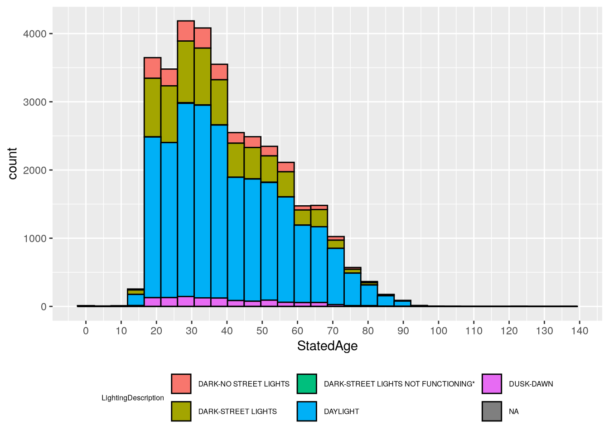
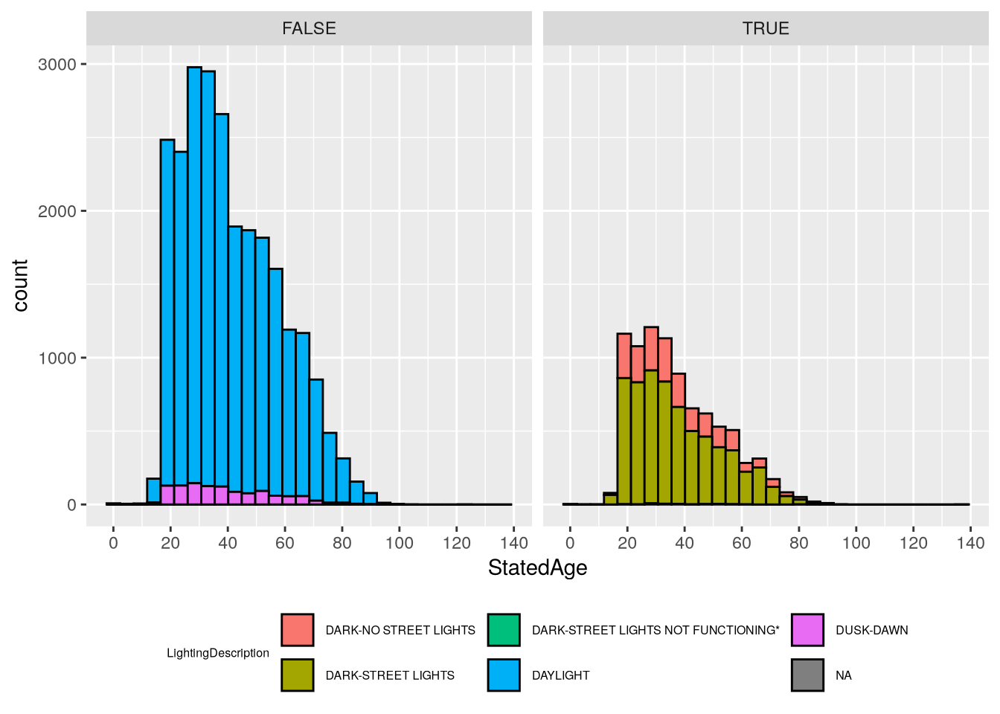
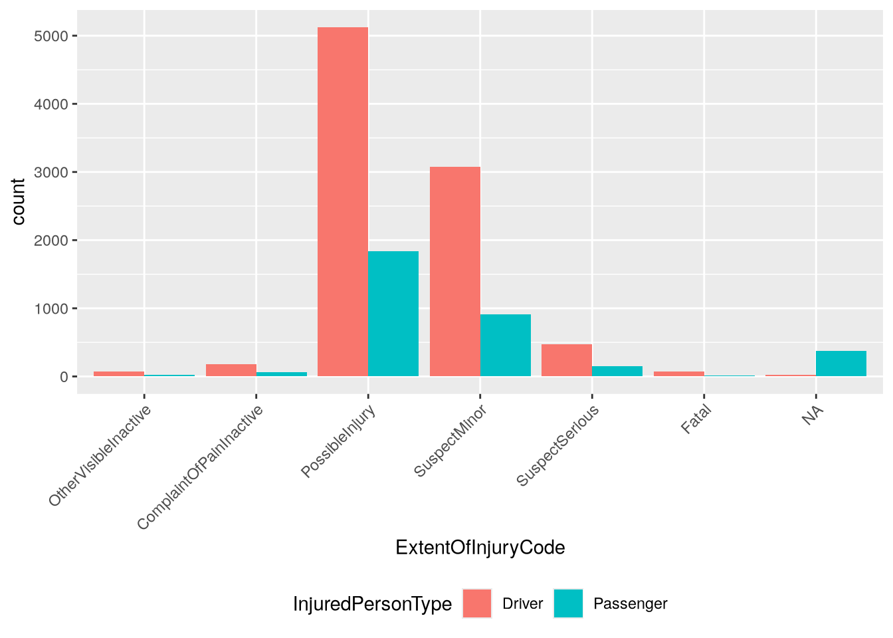

Use the dplyr package to join data based on common columns
Describe the different types of joins
Identify which types of joins to use when faced with a relational dataset
4.1 Relational Datasets
Think about how you would organize restaurant reviews data. Each restaurant has a name, address, phone number, operating hours, and other restaurant level details. Because the number of reviews for each restaurant will vary, we could put the data in a single table with one row for each review. Then the table is at the review level, and we’d have to repeat restaurant level details across all reviews for each restaurant.
The review level table is convenient if we want to analyze reviews, but not so convenient if we want to analyze restaurants. For instance, suppose we want to count how many restaurants open before 10 a.m. In order to avoid counting each restaurant multiple times, we have to reduce the table to one row per restaurant before we compute the count.
The problem with putting the restaurant review data in a single table is that it consists of observations at two different levels: the restaurant level and the review level. From this perspective, an intuitive solution is to put the data in two tables: a “restaurants” table where each row is a restaurant and a “reviews” table where each row is a review. Then we can choose the most suitable table for each question we want to answer.
Each review is associated with a restaurant, and each restaurant is associated with some reviews, so the two tables are related even though they’re separate. We can keep track of the relationship by including a column for restaurant name (or a unique restaurant identifier) in both tables. This makes the data relational: multiple tables where the relationships between them are expressed through columns in common.
Note
Most database software are designed to efficiently store and query relational data, so in computing contexts, database is often synonymous with relational data.
For some questions, we’ll need to use both the restaurants table and the reviews table. For example, suppose we want to count how many restaurants open before 10 a.m. and have at least 1 five-star review. We can use the reviews table to compute the number of five-star reviews for each restaurant, combine these with the restaurants table, and then count restaurants that meet our conditions in the resulting table. Operations that combine two related tables based on columns they have in common are called joins. The two tables are conventionally called the left table and right table.
There are a few different kinds of joins. We’ll use a simplified, fictitious version of the restaurant reviews data to demonstrate some of them. The restaurants table contains names and phone numbers for three restaurants:
restaurants =data.frame(id =c(1, 2, 3),name =c("Alice's Restaurant", "The Original Beef", "The Pie Hole"),phone =c("555-3213", "555-1111", "555-9983"))restaurants
id name phone
1 1 Alice's Restaurant 555-3213
2 2 The Original Beef 555-1111
3 3 The Pie Hole 555-9983
The reviews table contains scores from five restaurant reviews:
The dplyr package provides a wide variety of functions for working with data frames. In this chapter, we’ll focus almost exclusively on the functions for combining data frames, but the other parts of the package are also useful. Like most Tidyverse packages, it comes with detailed documentation and a cheatsheet.
Install the package if you haven’t already, and then load it:
# install.packages("dplyr")library("dplyr")
Attaching package: 'dplyr'
The following objects are masked from 'package:stats':
filter, lag
The following objects are masked from 'package:base':
intersect, setdiff, setequal, union
Note
If you’ve ever used SQL, you’re probably familiar with relational datasets and recognize commands like SELECT, LEFT JOIN, and GROUP BY. The dplyr package borrows some of the ideas of SQL, and provides select, left_join, and group_by functions (among others) that are reminiscent of their SQL counterparts.
If you haven’t used SQL, don’t worry—all of the functions will be explained in detail.
4.3 Inner Joins
An inner join only keeps rows from the left table if they match rows in the right table and vice-versa.
You can use dplyr’s inner_join function to join two data frames with an inner join. The first argument is the left table and the second argument is the right table. Set the by parameter to the name of the column to use to match the rows. Try joining the restaurants table and the reviews table:
inner_join(restaurants, reviews)
Joining with `by = join_by(id)`
id name phone score
1 1 Alice's Restaurant 555-3213 4.7
2 2 The Original Beef 555-1111 3.5
3 2 The Original Beef 555-1111 4.8
4 2 The Original Beef 555-1111 4.0
The inner join keeps rows where id is 1 or 2, since these values appear in both tables. It drops the row where id is 3 in restaurants and the row where id is 4 in reviews. The resulting table has 4 rows and the columns from both data frames.
Tip
If the columns you want to use to join two data frames have different names, set by = join_by(LCOL == RCOL), replacing LCOL with the name of the column in the left table and RCOL with the name of the column in the right table.
4.4 Left & Right Joins
A left join keeps all rows from the left table and only keeps rows from the right table if they match. Missing values fill any spaces where there was no match.
You can use dplyr’s left_join function to join two data frames with a left join. The arguments are the same as for the inner_join function. Try a left join on the restaurant reviews data:
left_join(restaurants, reviews)
Joining with `by = join_by(id)`
id name phone score
1 1 Alice's Restaurant 555-3213 4.7
2 2 The Original Beef 555-1111 3.5
3 2 The Original Beef 555-1111 4.8
4 2 The Original Beef 555-1111 4.0
5 3 The Pie Hole 555-9983 NA
The left join keeps all of the rows from restaurants, and matches rows from reviews when possible. There are no reviews where the id is 3, so score is missing for that row.
A left join is asymmetric, so switching the order of the tables will generally produce a different result:
left_join(reviews, restaurants)
Joining with `by = join_by(id)`
id score name phone
1 4 4.2 <NA> <NA>
2 2 3.5 The Original Beef 555-1111
3 1 4.7 Alice's Restaurant 555-3213
4 2 4.8 The Original Beef 555-1111
5 2 4.0 The Original Beef 555-1111
A right join is equivalent to a left join with the order of the tables switched. Because of this, some relational data tools don’t have a right join command (only a left join command). You can use dplyr’s right_join function to join two data frames with a right join.
4.5 Full Joins
A full join keeps all rows from both tables. Missing values fill any spaces where there was no match.
You can use dplyr’s full_join function to join two data frames with a full join. The arguments are the same as for the inner_join and left_join function. Try a full join on the restaurant reviews data:
full_join(restaurants, reviews)
Joining with `by = join_by(id)`
id name phone score
1 1 Alice's Restaurant 555-3213 4.7
2 2 The Original Beef 555-1111 3.5
3 2 The Original Beef 555-1111 4.8
4 2 The Original Beef 555-1111 4.0
5 3 The Pie Hole 555-9983 NA
6 4 <NA> <NA> 4.2
NoteSee Also
There are a few more kinds of joins. See the dplyr documentation for details.
4.6 Case Study: CA Crash Reporting System
The California Highway Patrol publish data about vehicle crashes in the state as the California Crash Reporting System (CCRS). The CCRS is a relational data set with three tables per year which describe crash events, parties involved, and all injuries, witnesses, and passengers. Let’s use the 2024 CCRS data for Sacramento and Yolo Counties to compute statistics about crashes in those counties.
Important
Click here to download the 2024 Sacramento & Yolo Crash dataset (3 CSV files).
If you haven’t already, we recommend you create a directory for this workshop. In your workshop directory, create a data/ subdirectory. Download and save the dataset in the data/ subdirectory.
NoteDocumentation for the 2024 Sacramento & Yolo Crash Dataset
The dataset consists of three tables:
2024_sac-yolo_crashes.csv, where each row is a crash.
2024_sac-yolo_parties.csv, where each row is a person directly involved in the crash (not a witness or passenger).
2024_sac-yolo_injured-witness-passenger.csv, where each row is an injured person (including drivers), witness, or passenger.
Click here to download the documentation for the source dataset.
To get started, let’s read each of the three tables in this dataset into R. We’ll use the readr package (a part of the Tidyverse), since its functions are more efficient and robust than R’s built-in data reader functions. Specifically, we’ll use the read_csv function to read the files.
In the crashes table, the SketchDesc column contains many blanks, which inteferes with the read_csv function’s ability to infer the column type. To fix this, we’ll set the column type manually. In the injured-witness-passenger table, the SeatPositionOther column has the same problem, and we’ll use the same fix. Here’s the code to read the three files:
Each table has many columns we could use. To stay focused, we’ll try to answer two questions:
How do lighting conditions interact with driver age?
Among injured people, do drivers or passengers experience more severe injuries? Does it matter whether they’re in the vehicle of the driver at fault?
There are, of course, many other ways to explore this dataset.
4.6.1 Question 1
In this section, we’ll try to address this question:
How do lighting conditions interact with driver age?
Let’s work on driver age first. In the parties table, the StatedAge column gives the age of each party involved in the crash. The parties table includes drivers, but also pedestrians, cyclists, and other parties; this is indicated by the PartyType column. We only want drivers, so we’ll filter the rows:
Now we need to get the lighting conditions associated with each crash. The LightingCode and LightingDescription columns in the crashes table provide this information. The two columns are just different ways of describing the same thing, which we can verify by counting all combinations of them:
count(crashes, LightingCode, LightingDescription)
# A tibble: 6 × 3
LightingCode LightingDescription n
<chr> <chr> <int>
1 A DAYLIGHT 14838
2 B DUSK-DAWN 757
3 C DARK-STREET LIGHTS 5290
4 D DARK-NO STREET LIGHTS 1689
5 E DARK-STREET LIGHTS NOT FUNCTIONING* 31
6 <NA> <NA> 10
We’ll keep both, since the codes in LightingCode are easier to type (for instance, for filtering) but the descriptions in LightingDescription are easier to understand.
We can attach the lighting conditions to the drivers data frame with a join. We want to get a lighting condition for every driver, so we’ll use a left join with the drivers data frame as the left table. We can use the CollisionId column, which is shared by both data frames, as the key for the join:
joined =left_join( drivers,# We only care about 3 columns in the crashes table. crashes[c("CollisionId", "LightingCode", "LightingDescription")],by ="CollisionId")
Notice that the resulting data frame has the same number of rows as the drivers data frame:
nrow(drivers) ==nrow(joined)
[1] TRUE
This indicates that we didn’t duplicate any drivers in the join.
Driver age is a continous feature, while lighting condition in categorical. So we can use a density plot or histogram to show age, with different colors to show lighting condition. For instance, here’s a density plot:
library("ggplot2")ggplot(joined) +aes(x = StatedAge, color = LightingDescription) +geom_density() +# Increase the number of x-axis tick marks.scale_x_continuous(n.breaks =20) +# Position legend at the bottom and decrease font size (since it's wide).theme(legend.position ="bottom",legend.text =element_text(size =6),legend.title =element_text(size =6) )
Warning: Removed 6890 rows containing non-finite outside the scale range
(`stat_density()`).
Warning: Groups with fewer than two data points have been dropped.
Warning: Removed 1 row containing missing values or values outside the scale range
(`geom_density()`).
`stat_bin()` using `bins = 30`. Pick better value `binwidth`.
Warning: Removed 6890 rows containing non-finite outside the scale range
(`stat_bin()`).

In both cases, the number of lighting categories makes the plots difficult to read. Let’s create a new feature to separate out the dark categories from the others. The dark categories have LightingCode equal to C, D, and E:
`stat_bin()` using `bins = 30`. Pick better value `binwidth`.
Warning: Removed 6890 rows containing non-finite outside the scale range
(`stat_bin()`).

Based on the plots, we can see that most crashes happen in daylight and involve younger drivers (under 50). In daylight crashes, drivers from age 20-40 are almost equally likely, whereas in dark crashes there are sharp peaks around 25. The “Dark - Street Lights Not Functioning” category is notably different from the others, with a peak around age 32, but the histogram shows that this category as also very small, so the peak is likely just a quirk of this sample rather than a general tendency in the larger population (and it would be quite surprising if older drivers were more likely to encounter non-functional street lights).
4.6.2 Question 2
Now we’ll try to address the second question:
Among injured people, do drivers or passengers experience more severe injuries? Does it matter whether they’re in the vehicle of the driver at fault?
For the first part of the question, we need to look at the injured table. The table includes an InjuredPersonType column that indicates which people are passengers and which are drivers. A complication here is that the IsPassengerOnly column also appears to indicate passengers, and the doesn’t match up with InjuredPersonType:
The nature of injure is in the ExtentOfInjuryCode column. To make our visualizations easier to read, let’s put the categories in order from least to most severe (with the understanding that some categories are vague):
Now we can make a bar plot to address the first part of the question:
ggplot(injured_in_car) +aes(x = ExtentOfInjuryCode, fill = InjuredPersonType) +geom_bar(position ="dodge") +theme(legend.position ="bottom",# Rotate axis labels to 45 degrees and align at right edge.axis.text.x =element_text(angle =45, hjust =1) )

The plot suggests that far more drivers are injured in crashes than passengers. That said, it’s important to keep in mind that the plot shows all crashes. If we filter the dataset to only the crashes where passengers were present, the result might be very different. Try visualizing this as an exercise!
Let’s address the second part of the question about being in the vehicle of the driver at fault. The party at fault is indicated by the IsAtFault column in the parties table. We need to join this to the injured_in_car data frame. Since collisions usually involve multiple parties, we need to use both CollisionId and PartyNumber as keys in the join. We’ll use a left join with injured_in_car as the left table:
joined =left_join( injured_in_car, parties[c("CollisionId", "PartyNumber", "IsAtFault")],by =c("CollisionId", "PartyNumber"))
We can use the joined IsAtFault column to facet the bar plot we made earlier:
From the plot, we can see that fewer injured people were in at fault vehicles overall, but there were still more drivers injured than passengers. This could be due to crashes where only one driver is at fault, but more than two vehicles are involved. Once again, we could check this through further inspection and visualization of the dataset. Try writing the code to do so!